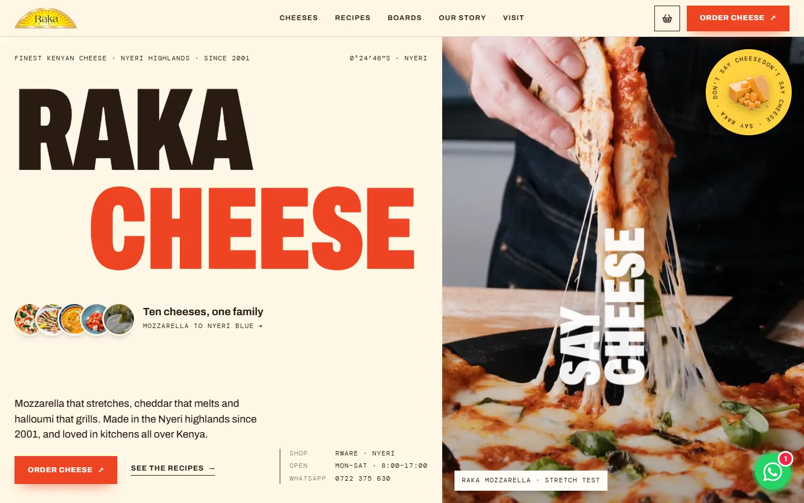
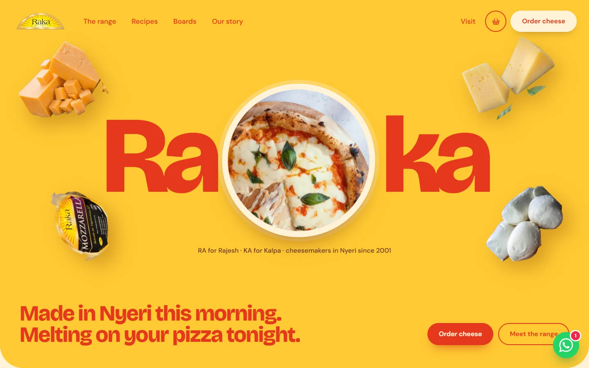

Raka CheeseWebsite concepts · November 2026
Two ways to make Kenya hungry for Raka
Both concepts carry the same content and features: the full Raka range with real packs, melting-cheese photography and video, twelve recipes, Kalpa’s grazing boards, a cheese list that orders on WhatsApp, a WhatsApp-style chat assistant, the map to the factory shop in Rware and Raka’s socials. They differ in look and in how they move, so you can choose how Raka greets its customers.

Concept A After Santo Mare, made bright Editorial Confident and premium. Tall capitals, mono labels and full-colour bands in red, blue, green and butter. Recipes travel past as turning plates, a list of cheeses swaps the picture as you point, and five moods play like a film. Open the editorial site →
Concept B After Ruota and Palazzo, sunny Fun Loud, warm and playful on Raka’s own yellow and tomato red. A wooden board you spin to meet ten cheeses, headlines with pictures inside, recipe cards that stack, and oven steam you wipe away to see the melt. Open the fun site →